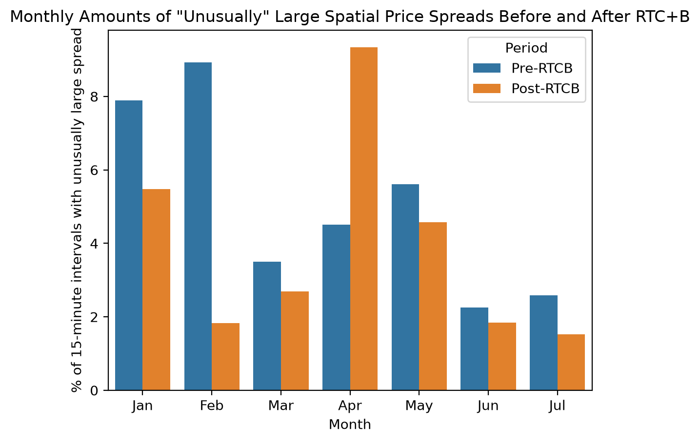
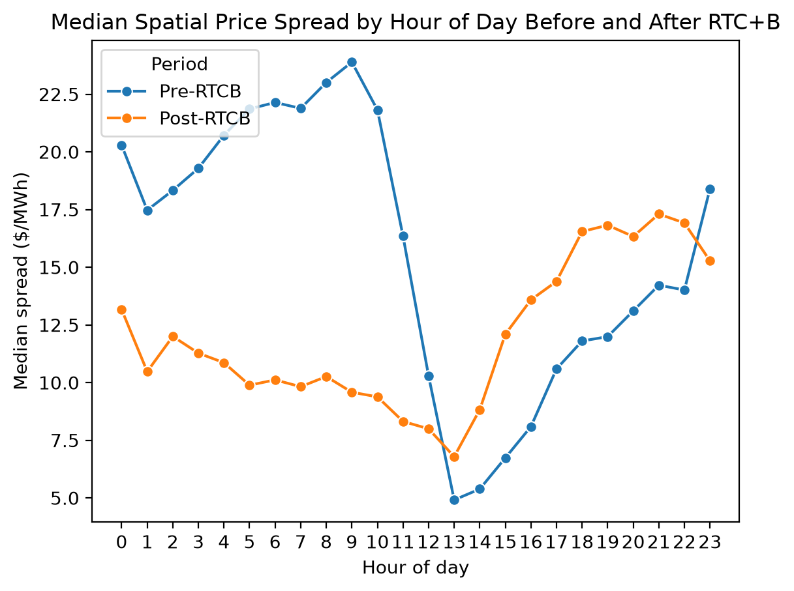
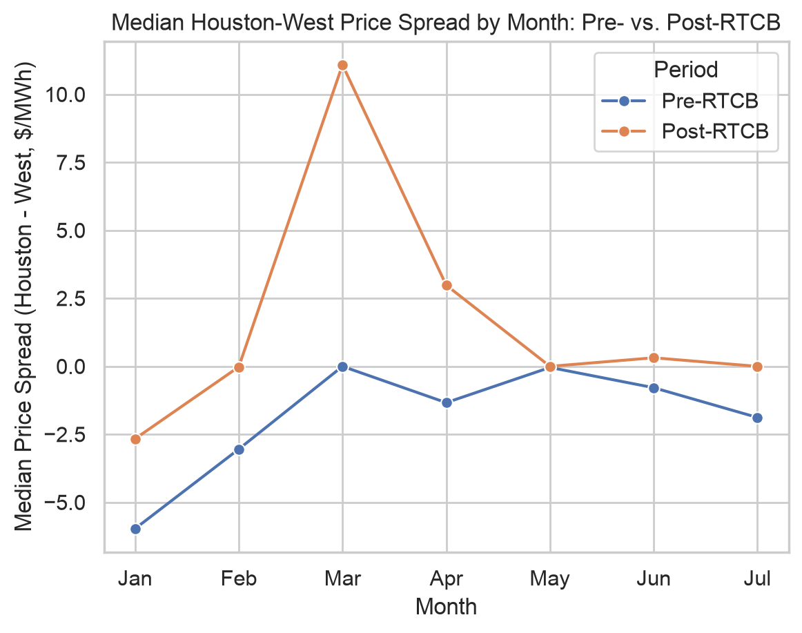
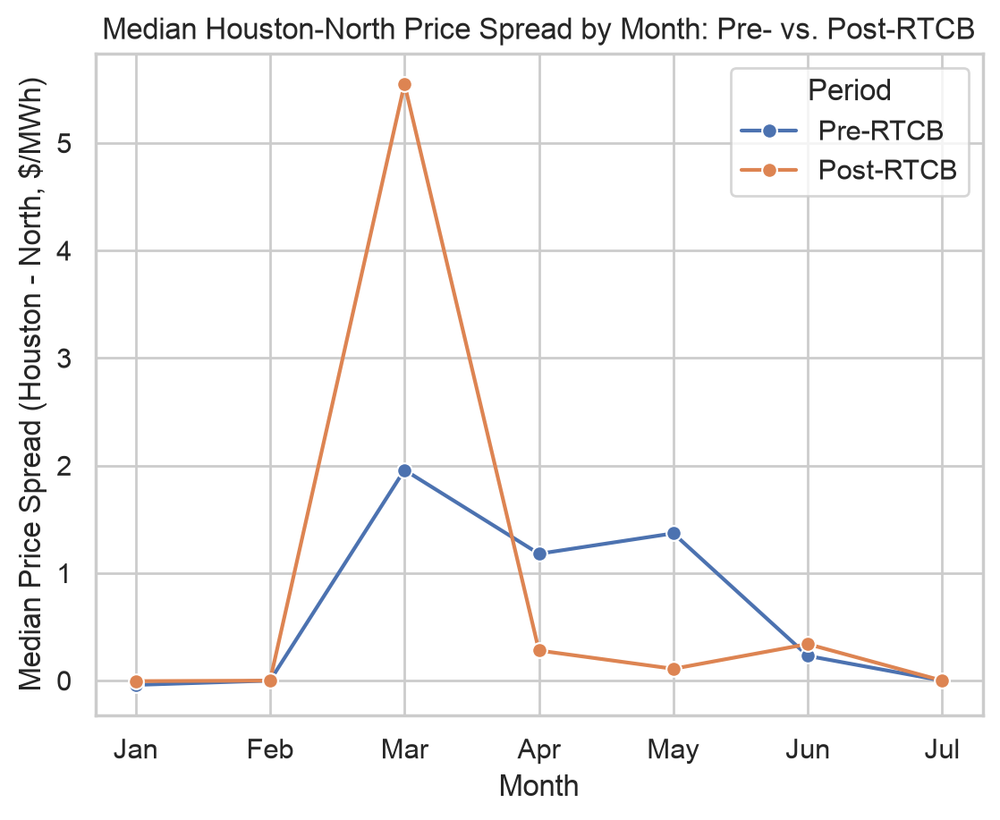
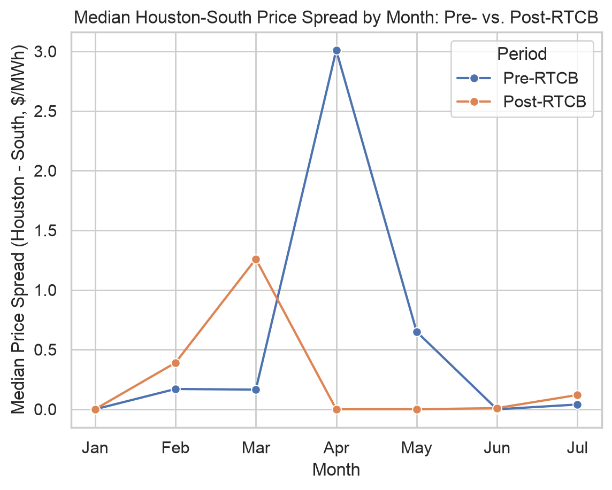

import pandas as pd
import numpy as np
import seaborn as snsercot = pd.read_csv("ercot_artifex.csv")
ercot| Unnamed: 0 | local_time | datetime_utc | spn | type | price | |
|---|---|---|---|---|---|---|
| 0 | 1 | 1/1/25 0:00 | 1/1/25 6:00 | LZ_HOUSTON | LZ | 17.90 |
| 1 | 2 | 1/1/25 0:00 | 1/1/25 6:00 | LZ_HOUSTON | LZEW | 17.90 |
| 2 | 3 | 1/1/25 0:15 | 1/1/25 6:15 | LZ_HOUSTON | LZ | 17.98 |
| 3 | 4 | 1/1/25 0:15 | 1/1/25 6:15 | LZ_HOUSTON | LZEW | 17.98 |
| 4 | 5 | 1/1/25 0:30 | 1/1/25 6:30 | LZ_HOUSTON | LZ | 18.21 |
| ... | ... | ... | ... | ... | ... | ... |
| 438491 | 438492 | 7/25/26 23:15 | 7/26/26 4:15 | LZ_WEST | LZEW | 25.91 |
| 438492 | 438493 | 7/25/26 23:30 | 7/26/26 4:30 | LZ_WEST | LZ | 23.92 |
| 438493 | 438494 | 7/25/26 23:30 | 7/26/26 4:30 | LZ_WEST | LZEW | 23.92 |
| 438494 | 438495 | 7/25/26 23:45 | 7/26/26 4:45 | LZ_WEST | LZ | 23.44 |
| 438495 | 438496 | 7/25/26 23:45 | 7/26/26 4:45 | LZ_WEST | LZEW | 23.44 |
438496 rows × 6 columns
ercot = pd.read_csv("ercot_artifex.csv")
ercot.head()
ercot["time_utc"] = pd.to_datetime(ercot["datetime_utc"], format="%m/%d/%y %H:%M")
zones = ["LZ_HOUSTON", "LZ_NORTH", "LZ_SOUTH", "LZ_WEST"]
LZ = ercot.query("type == 'LZ' & spn in @zones")
wide = LZ.pivot(index="time_utc", columns="spn", values="price").reset_index()
wide = (
wide
.assign(
spread=lambda x: x[zones].max(axis=1) - x[zones].min(axis=1),
month=lambda x: x["time_utc"].dt.month,
prepost=lambda x: np.where(x["time_utc"] < "2025-12-05", "Pre-RTCB", "Post-RTCB")
)
.query("month <= 7")
)
wide.head()| spn | time_utc | LZ_HOUSTON | LZ_NORTH | LZ_SOUTH | LZ_WEST | spread | month | prepost |
|---|---|---|---|---|---|---|---|---|
| 0 | 2025-01-01 06:00:00 | 17.90 | 17.90 | 17.90 | 17.90 | 0.0 | 1 | Pre-RTCB |
| 1 | 2025-01-01 06:15:00 | 17.98 | 17.98 | 17.98 | 17.98 | 0.0 | 1 | Pre-RTCB |
| 2 | 2025-01-01 06:30:00 | 18.21 | 18.21 | 18.21 | 18.21 | 0.0 | 1 | Pre-RTCB |
| 3 | 2025-01-01 06:45:00 | 18.22 | 18.22 | 18.22 | 18.22 | 0.0 | 1 | Pre-RTCB |
| 4 | 2025-01-01 07:00:00 | 17.97 | 17.97 | 17.97 | 17.97 | 0.0 | 1 | Pre-RTCB |
cutoff = wide.query("prepost == 'Pre-RTCB'")["spread"].quantile(0.95)
print("Cutoff ($/MWh):", cutoff)
unusual = (
wide
.assign(big=lambda x: x["spread"] > cutoff)
.groupby(["month", "prepost"], as_index=False)
.agg(pct_big=("big", "mean"))
.assign(pct_big=lambda x: x["pct_big"] * 100)
)
unusual.head()Cutoff ($/MWh): 62.94| month | prepost | pct_big | |
|---|---|---|---|
| 0 | 1 | Post-RTCB | 5.477151 |
| 1 | 1 | Pre-RTCB | 7.892954 |
| 2 | 2 | Post-RTCB | 1.822917 |
| 3 | 2 | Pre-RTCB | 8.928571 |
| 4 | 3 | Post-RTCB | 2.688172 |
ax = sns.barplot(
data=unusual,
x="month",
y="pct_big",
hue="prepost",
hue_order=["Pre-RTCB", "Post-RTCB"]
)
ax.set(
title="Monthly Amounts of \"Unusually\" Large Spatial Price Spreads Before and After RTC+B",
xlabel="Month",
ylabel="% of 15-minute intervals with unusually large spread",
xticklabels=["Jan", "Feb", "Mar", "Apr", "May", "Jun", "Jul"]
)
sns.move_legend(ax, "upper right", title="Period")<positron-console-cell-5>:8: UserWarning: set_ticklabels() should only be used with a fixed number of ticks, i.e. after set_ticks() or using a FixedLocator. Otherwise, ticks may be mislabeled.
wide["hour"] = (
wide["time_utc"].dt.hour
)
hourly = (
wide
.groupby(["hour", "prepost"], as_index=False)
.agg(median_spread=("spread", "median"))
)
print(hourly) hour prepost median_spread
0 0 Post-RTCB 13.165
1 0 Pre-RTCB 20.290
2 1 Post-RTCB 10.475
3 1 Pre-RTCB 17.470
4 2 Post-RTCB 12.000
5 2 Pre-RTCB 18.330
6 3 Post-RTCB 11.275
7 3 Pre-RTCB 19.285
8 4 Post-RTCB 10.860
9 4 Pre-RTCB 20.720
10 5 Post-RTCB 9.885
11 5 Pre-RTCB 21.860
12 6 Post-RTCB 10.115
13 6 Pre-RTCB 22.140
14 7 Post-RTCB 9.820
15 7 Pre-RTCB 21.885
16 8 Post-RTCB 10.260
17 8 Pre-RTCB 23.005
18 9 Post-RTCB 9.580
19 9 Pre-RTCB 23.890
20 10 Post-RTCB 9.380
21 10 Pre-RTCB 21.815
22 11 Post-RTCB 8.315
23 11 Pre-RTCB 16.345
24 12 Post-RTCB 7.995
25 12 Pre-RTCB 10.285
26 13 Post-RTCB 6.785
27 13 Pre-RTCB 4.910
28 14 Post-RTCB 8.825
29 14 Pre-RTCB 5.385
30 15 Post-RTCB 12.095
31 15 Pre-RTCB 6.735
32 16 Post-RTCB 13.585
33 16 Pre-RTCB 8.090
34 17 Post-RTCB 14.385
35 17 Pre-RTCB 10.590
36 18 Post-RTCB 16.545
37 18 Pre-RTCB 11.800
38 19 Post-RTCB 16.820
39 19 Pre-RTCB 11.990
40 20 Post-RTCB 16.330
41 20 Pre-RTCB 13.105
42 21 Post-RTCB 17.305
43 21 Pre-RTCB 14.220
44 22 Post-RTCB 16.915
45 22 Pre-RTCB 14.010
46 23 Post-RTCB 15.275
47 23 Pre-RTCB 18.400ax = sns.lineplot(
data=hourly,
x="hour",
y="median_spread",
hue="prepost",
hue_order=["Pre-RTCB", "Post-RTCB"],
marker="o"
)
ax.set(
title="Median Spatial Price Spread by Hour of Day Before and After RTC+B",
xlabel="Hour of day",
ylabel="Median spread ($/MWh)",
xticks=range(0, 24)
)
sns.move_legend(ax, "upper left", title="Period")
ercot = pd.read_csv("ercot_artifex.csv")
ercot["time_utc"] = pd.to_datetime(ercot["datetime_utc"], format = "%m/%d/%y %H:%M")
ercot["time_utc"].dt.month
LZ = ercot.query("type == 'LZ' & spn == ['LZ_HOUSTON', 'LZ_WEST']")
wide = LZ.pivot(index=["time_utc"], columns="spn", values="price").reset_index()
wide.head()
HW=( wide.assign(wdiff=wide["LZ_HOUSTON"]-wide["LZ_WEST"], month=lambda x: x["time_utc"].dt.month, prepost=lambda x: np.where(x["time_utc"]< "2025-12-05", "Pre-RTCB", "Post-RTCB"))).query("month <=7").groupby(["month", "prepost"], as_index=False).agg(med=("wdiff", "median"))
sns.set_theme(style="whitegrid")
ax = sns.lineplot(
data=HW,
x="month",
y="med",
hue="prepost",
hue_order=["Pre-RTCB", "Post-RTCB"],
marker="o"
)
ax.set(
title="Median Houston-West Price Spread by Month: Pre- vs. Post-RTCB",
xlabel="Month",
ylabel="Median Price Spread (Houston - West, $/MWh)",
xticks=range(1, 8),
xticklabels=["Jan", "Feb", "Mar", "Apr", "May", "Jun", "Jul"]
)
sns.move_legend(ax, "upper right", title="Period")
ercot = pd.read_csv("ercot_artifex.csv")
ercot["time_utc"] = pd.to_datetime(ercot["datetime_utc"], format = "%m/%d/%y %H:%M")
ercot["time_utc"].dt.month
LZ = ercot.query("type == 'LZ' & spn == ['LZ_HOUSTON', 'LZ_NORTH']")
wide = LZ.pivot(index=["time_utc"], columns="spn", values="price").reset_index()
wide.head()
HW=( wide.assign(wdiff=wide["LZ_HOUSTON"]-wide["LZ_NORTH"], month=lambda x: x["time_utc"].dt.month, prepost=lambda x: np.where(x["time_utc"]< "2025-12-05", "Pre-RTCB", "Post-RTCB"))).query("month <=7").groupby(["month", "prepost"], as_index=False).agg(med=("wdiff", "median"))
sns.set_theme(style="whitegrid")
ax = sns.lineplot(
data=HW,
x="month",
y="med",
hue="prepost",
hue_order=["Pre-RTCB", "Post-RTCB"],
marker="o"
)
ax.set(
title="Median Houston-North Price Spread by Month: Pre- vs. Post-RTCB",
xlabel="Month",
ylabel="Median Price Spread (Houston - North, $/MWh)",
xticks=range(1, 8),
xticklabels=["Jan", "Feb", "Mar", "Apr", "May", "Jun", "Jul"]
)
sns.move_legend(ax, "upper right", title="Period")
LZ = ercot.query("type == 'LZ' & spn == ['LZ_HOUSTON', 'LZ_SOUTH']")
wide = LZ.pivot(index=["time_utc"], columns="spn", values="price").reset_index()
wide.head()
HW=( wide.assign(wdiff=wide["LZ_HOUSTON"]-wide["LZ_SOUTH"], month=lambda x: x["time_utc"].dt.month, prepost=lambda x: np.where(x["time_utc"]< "2025-12-05", "Pre-RTCB", "Post-RTCB"))).query("month <=7").groupby(["month", "prepost"], as_index=False).agg(med=("wdiff", "median"))
sns.set_theme(style="whitegrid")
ax = sns.lineplot(
data=HW,
x="month",
y="med",
hue="prepost",
hue_order=["Pre-RTCB", "Post-RTCB"],
marker="o"
)
ax.set(
title="Median Houston-South Price Spread by Month: Pre- vs. Post-RTCB",
xlabel="Month",
ylabel="Median Price Spread (Houston - South, $/MWh)",
xticks=range(1, 8),
xticklabels=["Jan", "Feb", "Mar", "Apr", "May", "Jun", "Jul"]
)
sns.move_legend(ax, "upper right", title="Period")